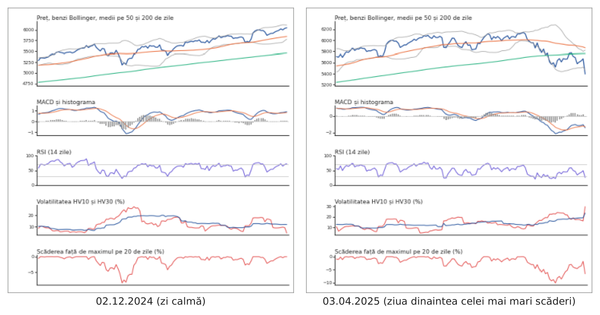
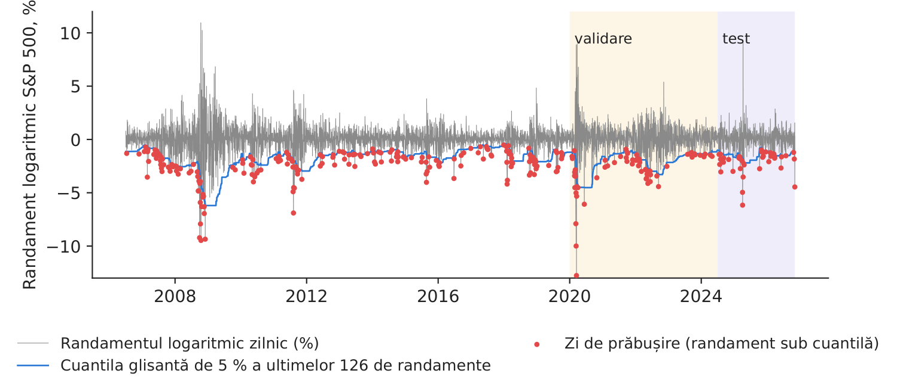
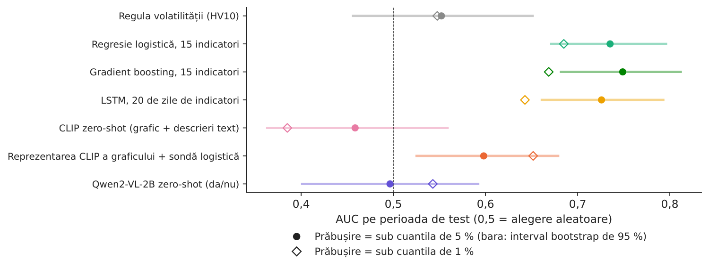
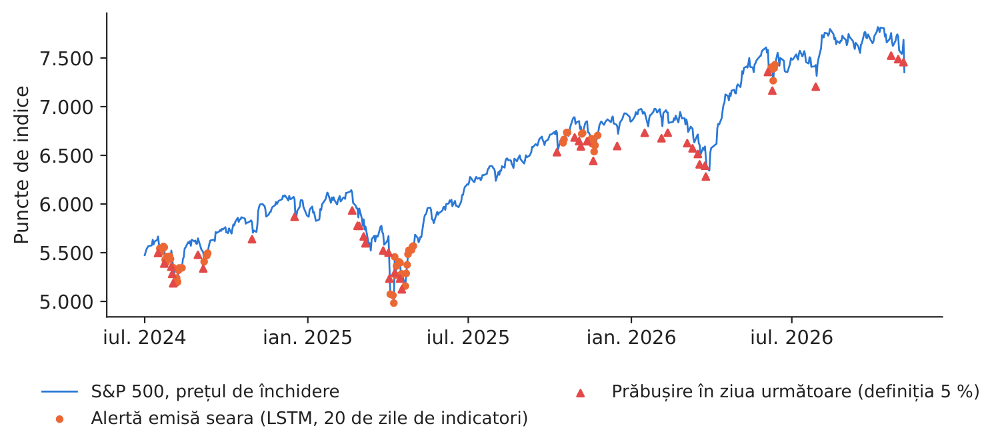

Studiul de caz 7 · Cursul 14
Citirea graficelor de piață cu modele vizual-lingvistice
Prof. dr. Daniel Traian PELE
Academia de Studii Economice din București, Departamentul de Statistică și Econometrie
Academia Română, Institutul de Prognoză Economică
Lucrarea de referință
Jheng, S.-L., Pele, D. T., Tak, R. și Găman, Ș. (2026). A multimodal vision-language framework for financial anomaly detection. Proceedings of the International Conference on Business Excellence, 20(1), 191–201. doi:10.2478/picbe-2026-0020
Problema decizională
În fiecare seară, departamentul de risc al unei societăți de administrare a investițiilor analizează graficele piețelor în care are poziții: prețul, impulsul, volatilitatea, scăderea față de maxim. Un analist cu experiență „vede” o problemă într-un grafic înainte ca ea să apară într-un singur indicator, dar graficele sînt sute, iar analiștii sînt puțini. Directorul de risc întreabă: poate un model să citească graficul asemenea unui analist, să semnaleze zilele dinaintea unei scăderi puternice și să explice de ce? Iar, înainte de a cumpăra un astfel de instrument: cîte alerte pe lună ar trebui verificate și cîte dintre zilele proaste ar fi semnalate?
Lucrarea de referință
Întrebarea de cercetare. Poate clasificarea regimurilor de piață să fie reformulată ca o problemă de recunoaștere vizuală, astfel încît un model vizual-lingvistic (VLM, vision-language model) să detecteze anomaliile financiare din graficele indicatorilor de piață și să își explice în cuvinte decizia (p. 192)? Cadrul propus se numește FINDER-LLM (FINancial Anomaly DEtection and Recognition using Large Language Models).
Datele. Prețurile zilnice de deschidere, maxim, minim și închidere și volumul tranzacționat pentru S&P 500 (indicele Standard & Poor's 500), 1 ianuarie 2005 – 30 iunie 2025; antrenare și calibrare pînă la 30 iunie 2024, data limită a cunoștințelor modelului GPT-4.1 (generative pre-trained transformer); test strict pe date noi, 1 iulie 2024 – 30 iunie 2025 (p. 197).
Metoda. Ferestre glisante de \(w=126\) zile de tranzacționare (ec. 1); cincisprezece indicatori tehnici — volatilitatea istorică, amplitudinea medie reală (average true range), MACD (moving average convergence divergence), RSI (relative strength index), benzile Bollinger, intersecțiile mediilor mobile (golden cross și death cross), scăderea maximă față de vîrf, indicele Ulcer, VaR (Value-at-Risk), ES (Expected Shortfall) și volumul cumulat după direcție (on-balance volume) (ec. 2–14) — desenați zilnic într-un singur grafic cu mai multe panouri; o întrebare zero-shot adresată modelului GPT-4.1, însoțită de grafic, de un tabel cu indicatori, de titluri de știri și de contextul prețurilor (p. 196); modelul returnează o etichetă, un scor de anomalie, tipul anomaliei și o justificare scrisă; o a doua variantă folosește o reprezentare vectorială (embedding) a răspunsului modelului (p. 197). O zi este zi de prăbușire atunci cînd randamentul logaritmic viitor scade sub cuantila glisantă de ordin \(\alpha\) a ultimelor 126 de randamente logaritmice, \(\alpha\in\{1\,\%, 5\,\%\}\) (ec. 15–16, p. 197).
Principalele rezultate ale lucrării.
- Pe 12 septembrie 2008, ultima zi de tranzacționare dinaintea prăbușirii Lehman Brothers, cadrul a returnat un scor de anomalie de 0,85, eticheta 1 și tipul „schimbare de regim / avertizare înaintea unei prăbușiri”, cu o justificare asemănătoare notei unui analist (Figura 2, p. 198).
- Pe anul de test, întrebarea zero-shot atinge o arie de sub curba ROC (AUC, area under the receiver operating characteristic curve) de 0,59 la \(\alpha=1\,\%\) și 0,58 la \(\alpha=5\,\%\), varianta cu reprezentări vectoriale 0,66 la \(\alpha=1\,\%\), în timp ce reperul LSTM (Long Short-Term Memory) pe aceiași indicatori obține 0,31 și 0,42 (Tabelul 1, p. 199).
- La \(\alpha=5\,\%\), întrebarea zero-shot identifică 4 dintre cele 20 de zile de prăbușire, cu 26 de alarme false (acuratețe 0,83); autorii conchid că detectarea bazată pe modele lingvistice mari oferă semnale zilnice de risc interpretabile, cu o acuratețe predictivă moderată, superioare indicatorilor tehnici clasici (p. 199–200).
Metoda, pas cu pas
Intuiția metodei
Un grafic comprimă cincisprezece indicatori și șase luni de istorie într-o singură imagine pe care un ochi format o citește în cîteva secunde: prețul coboară spre banda Bollinger inferioară, impulsul este negativ, volatilitatea crește, scăderea față de maxim se adîncește. Un model vizual-lingvistic a văzut milioane de imagini și texte; el transformă graficul într-un vector (o reprezentare, embedding) sau într-un răspuns formulat în cuvinte. Testăm trei moduri de utilizare: comparăm graficul cu descrieri text (zero-shot), învățăm un strat logistic simplu peste vectorii imaginilor (o sondă, probe) sau punem o întrebare și citim răspunsul.
Eticheta. Cu prețul de închidere \(C_t\) și randamentul logaritmic \(r_t=\log(C_t/C_{t-1})\), randamentul viitor este \(R_{t,h}=\log(C_{t+h}/C_t)\) (ec. 15 din lucrare), iar eticheta de prăbușire este \(y_t=\mathbf{1}\{R_{t,h}<q_{\alpha,t}\}\), unde \(q_{\alpha,t}\) este cuantila empirică de ordin \(\alpha\) a valorilor \(r_{t-125},\dots,r_t\) (ec. 16); folosim \(h=1\). Graficul. Pentru fiecare zi, imaginea \(I_t\) arată ultimele \(w=126\) de zile în cinci panouri: prețul, cu benzile Bollinger \(\mathrm{SMA}_{20}\pm2\,\mathrm{sd}_{20}\) și mediile pe 50 și 200 de zile; MACD \(=\mathrm{EMA}_{12}(C)-\mathrm{EMA}_{26}(C)\) și histograma sa (MACD minus media sa mobilă exponențială, EMA, pe 9 zile); RSI \(=100-100/(1+\overline{G}_{14}/\overline{L}_{14})\), unde \(\overline{G}\) și \(\overline{L}\) sînt mediile mobile exponențiale ale cîștigurilor și pierderilor; volatilitatea \(\mathrm{HV}_w=\sqrt{252}\,\mathrm{sd}(r_{t-w+1},\dots,r_t)\) pentru \(w=10,30\); scăderea \(C_t/\max(C_{t-19},\dots,C_t)-1\). CLIP (Contrastive Language-Image Pre-training) transformă o imagine în vectorul \(\mathbf u_t=f(I_t)\) și un text în vectorul \(\mathbf v=g(\text{text})\), ambii de normă 1. Scorul zero-shot este \(s_t=\mathbf u_t^\top\bar{\mathbf v}_1-\mathbf u_t^\top\bar{\mathbf v}_0\), unde \(\bar{\mathbf v}_c\) este media reprezentărilor a trei descrieri ale unei piețe calme (\(c=0\)) sau sub presiune (\(c=1\)). Sonda este o regresie logistică pe cele 512 coordonate standardizate ale imaginii, \(\Pr(y_t=1\mid I_t)=\sigma(\beta_0+\boldsymbol\beta^\top\mathbf z_t)\), \(\sigma(x)=1/(1+e^{-x})\), estimată cu o penalizare \(L_2\) a cărei intensitate se alege pe perioada de validare. Qwen2-VL-2B primește graficul și întrebarea „există un risc ridicat de scădere puternică în următoarea zi de tranzacționare? Răspundeți cu da sau nu”; scorul său este \(p_t=P(\text{da})/(P(\text{da})+P(\text{nu}))\), citit din probabilitățile primului cuvînt al răspunsului. Reperele folosesc cei 15 indicatori ca numere: regula volatilității (\(s_t=\mathrm{HV}_{10,t}\)), o regresie logistică, arbori construiți secvențial (gradient boosting) și o rețea LSTM pe ultimele 20 de zile de indicatori (media a trei inițializări aleatoare). Evaluarea. \(\mathrm{AUC}=\Pr(s_i>s_j\mid y_i=1,y_j=0)\); alerta se emite atunci cînd \(s_t\ge\tau\), iar pragul \(\tau\) maximizează F1 pe perioada de validare; precizia \(=TP/(TP+FP)\), sensibilitatea \(=TP/(TP+FN)\), \(F1=2PR/(P+R)\), acuratețea echilibrată \(=\tfrac12\,[TP/(TP+FN)+TN/(TN+FP)]\), unde \(TP\), \(FP\), \(TN\) și \(FN\) reprezintă numărul rezultatelor pozitive adevărate, pozitive false, negative adevărate și negative false.
În practică
Tratați modelul ca pe un nivel de alertă, nu ca pe un decident: stabiliți pragul pe o perioadă de validare, puneți la dispoziția analistului graficul și justificarea și comparați alertele cu o simplă regulă de volatilitate înainte de a plăti pentru ceva mai complex.
Replicare pe datele cursului
Notebook-ul C7_notebook_RO.ipynb folosește prețurile zilnice și volumul indicelui S&P 500 (Yahoo Finance), 5.119 zile de tranzacționare cu grafic și etichetă complete: antrenare iulie 2006 – decembrie 2019 (3.398 de zile), validare ianuarie 2020 – iunie 2024 (1.130 de zile), test 01.07.2024 – 05.11.2026 (591 de zile, dintre care 42 de zile de prăbușire la \(\alpha=5\,\%\) și 13 la \(\alpha=1\,\%\)).
Față de lucrare, implementarea de la curs folosește modele deschise, care rulează pe un laptop (CLIP ViT-B/16, vision transformer cu blocuri de 16 pixeli, și Qwen2-VL-2B-Instruct), în locul lui GPT-4.1, numai imaginea graficului (fără tabelul de indicatori, știri sau contextul prețurilor), orizontul de o zi (\(h=1\)) și o perioadă de test extinsă cu șaisprezece luni. Toate graficele sînt desenate din prețurile reale; modelele le văd exact ca în Figura 1.

Figura 1. Intrarea modelelor: graficul cu cinci panouri pentru o zi calmă din perioada de test (02.12.2024) și pentru 03.04.2025, seara dinaintea celei mai mari scăderi zilnice din perioada de test (\(-\)6,16 % pe 04.04.2025).
Sursa: graficele noastre, pe date Yahoo Finance pentru S&P 500; modelele citesc versiunea în limba engleză.

Figura 2. Randamentele logaritmice zilnice, cuantila glisantă de 5 % și zilele de prăbușire (ec. 16 din lucrare).
Sursa: Yahoo Finance; etichetele noastre; zonele colorate: perioadele de validare și de test.
Tabelul 1. Performanța pe date noi (01.07.2024 – 05.11.2026), prăbușire = randamentul din ziua următoare sub cuantila glisantă de 5 %; ultima coloană: cuantila de 1 %. Cea mai bună valoare este marcată cu aldine.
| Model | AUC | IÎ 95 % | Precizie | Sensibilitate | F1 | Acur. echil. | AUC, \(\alpha\)=1 % |
|---|---|---|---|---|---|---|---|
| Regula volatilității (HV10) | 0,552 | [0,46; 0,65] | 0,231 | 0,071 | 0,109 | 0,527 | 0,548 |
| Regresie logistică, 15 indicatori | 0,735 | [0,67; 0,80] | 0,138 | 0,524 | 0,218 | 0,636 | 0,685 |
| Gradient boosting, 15 indicatori | 0,749 | [0,68; 0,81] | 0,144 | 0,690 | 0,239 | 0,689 | 0,669 |
| LSTM, 20 de zile de indicatori | 0,726 | [0,66; 0,79] | 0,130 | 0,167 | 0,146 | 0,541 | 0,643 |
| CLIP zero-shot (grafic + descrieri text) | 0,459 | [0,36; 0,56] | 0,129 | 0,095 | 0,110 | 0,523 | 0,385 |
| Reprezentarea CLIP a graficului + sondă logistică | 0,598 | [0,53; 0,68] | 0,027 | 0,024 | 0,025 | 0,479 | 0,652 |
| Qwen2-VL-2B zero-shot (da/nu) | 0,496 | [0,40; 0,59] | 0,069 | 0,310 | 0,113 | 0,494 | 0,543 |
Sursa: calcule proprii; IÎ = interval de încredere bootstrap de 95 % (1.000 de reeșantionări ale zilelor de test); pragul de alertă este ales pe perioada de validare. Lucrarea (GPT-4.1, test iulie 2024 – iunie 2025, Tabelul 1): AUC 0,58 (5 %) și 0,59 (1 %) pentru întrebarea zero-shot, 0,42 și 0,31 pentru LSTM.
Tabelul 2. Matricea de confuzie pe perioada de test; indicele 5: prăbușire sub cuantila de 5 %, indicele 1: sub cuantila de 1 %.
| Model | TP\(_{5}\) | FP\(_{5}\) | TN\(_{5}\) | FN\(_{5}\) | TP\(_{1}\) | FP\(_{1}\) | TN\(_{1}\) | FN\(_{1}\) |
|---|---|---|---|---|---|---|---|---|
| Regula volatilității (HV10) | 3 | 10 | 539 | 39 | 0 | 10 | 568 | 13 |
| Regresie logistică, 15 indicatori | 22 | 138 | 411 | 20 | 3 | 11 | 567 | 10 |
| Gradient boosting, 15 indicatori | 29 | 172 | 377 | 13 | 5 | 100 | 478 | 8 |
| LSTM, 20 de zile de indicatori | 7 | 47 | 502 | 35 | 0 | 8 | 570 | 13 |
| CLIP zero-shot (grafic + descrieri text) | 4 | 27 | 522 | 38 | 1 | 30 | 548 | 12 |
| Reprezentarea CLIP a graficului + sondă logistică | 1 | 36 | 513 | 41 | 2 | 70 | 508 | 11 |
| Qwen2-VL-2B zero-shot (da/nu) | 13 | 176 | 373 | 29 | 0 | 50 | 528 | 13 |
Sursa: calcule proprii; TP, FP, TN, FN = pozitive adevărate, pozitive false, negative adevărate, negative false. Lucrarea la 5 % (întrebarea zero-shot): TP 4, FP 26, TN 201, FN 16.
Ce arată datele. Pe perioada de test, modelele care folosesc cei 15 indicatori ca numere ordonează cel mai bine serile dinaintea unei prăbușiri: regresia logistică (AUC 0,735), gradient boosting (0,749) și rețeaua LSTM (0,726; între 0,715 și 0,730 pentru cele trei inițializări). Dintre modelele care citesc graficul, sonda logistică pe reprezentările CLIP depășește nivelul alegerii aleatoare (AUC 0,598, interval de 95 % 0,525–0,679): vectorii imaginilor conțin informație despre risc, odată ce peste ei se antrenează un strat simplu. Folosite zero-shot, fără nicio antrenare pe etichetele noastre, CLIP (0,459) și Qwen2-VL-2B (0,496, interval 0,401–0,592) se află la nivelul alegerii aleatoare: modelele generale de mici dimensiuni nu știu, numai din descrieri text, ce grafic precede o prăbușire. Simpla regulă a volatilității atinge 0,552. Ordinea diferă de cea din anul de test al lucrării (GPT-4.1 cu știri și tabel de indicatori: 0,58; LSTM: 0,42); diferă modelul, informația primită și perioada de test, iar cu 42 de zile de prăbușire intervalele sînt largi.

Figura 3. AUC pe perioada de test pentru fiecare model, cu intervale bootstrap de 95 %.
Sursa: calcule proprii.

Figura 4. Alertele modelului cu cel mai bun AUC pe validare și zilele de prăbușire din perioada de test.
Sursa: calcule proprii; Yahoo Finance.
Justificarea, citită în paralel cu graficul. Întrebat, în formatul structurat din lucrare, despre seara de 03.04.2025 (panoul din dreapta al Figurii 1), Qwen2-VL-2B a răspuns (textul original, în engleză): scorul de anomalie 0.0, eticheta 0, tipul „No apparent anomaly”, semnalele principale „Price is above the 50-day moving average and the 200-day moving average; MACD is positive and the histogram is above zero; RSI is below 50; Volatility is below 30; Drawdown from the 20-day high is below 5%” și justificarea: „The technical indicators show that the S&P 500 stock index is not in a state of overbought or oversold, and the volatility is relatively low. The price is above the 50-day moving average and the 200-day moving average, which suggests that the index is likely to continue its upward trend. The MACD is positive and the histogram is above zero, indicating that the index is in an uptrend. The RSI is below 50, which suggests that the index is in an overbought state. The volatility is below 30, which is a normal range for the index. The drawdown from the 20-day high is below 5%, which is a normal range for the index. Therefore, there is no apparent risk of a sharp fall on the next trading day.” Graficul arată altceva: MACD de \(-\)1,42 % din preț, cu histograma \(-\)0,12, prețul la \(-\)6,3 % față de media pe 200 de zile, HV10 de 29,8 %, RSI de 26 și o scădere de \(-\)6,6 % față de maximul pe 20 de zile; în ziua următoare, indicele a scăzut cu \(-\)6,16 %. Modelul a răspuns „nicio anomalie” pentru 6 dintre cele 6 grafice analizate. O justificare este utilă numai dacă cineva o verifică pe grafic — motiv pentru care lucrarea extrage semnale structurate, pe care un analist le poate verifica.
Cifra relevantă pentru decizie. Modelul cu cel mai bun AUC pe validare este LSTM, 20 de zile de indicatori (validare 0,754, test 0,726). Cu pragul ales pe validare, el a emis 54 de alerte în perioada de test, adică 1,9 pe lună, și a semnalat 17 % dintre zilele de prăbușire și 3 dintre cele mai mari 10 scăderi. În serile cu alertă, randamentul din ziua următoare a avut o abatere standard de 1,79 %, față de 0,90 % în celelalte zile (medie 0,37 %, față de 0,02 %): alerta marchează zilele agitate, cu mișcări mari în ambele direcții, nu prognozează direcția. Pentru departamentul de risc, volumul de verificare este gestionabil; un model vizual-lingvistic poate adăuga, ca al doilea nivel, explicația scrisă, cu condiția ca analistul să o verifice pe grafic.
Întrebări pentru discuție
- Alături de modelele vizual-lingvistice se află o simplă regulă de volatilitate. Ce ați vrea să vedeți înainte de a plăti pentru instrumentul mai complex?
- Justificarea modelului se citește ca nota unui analist. Cum ați verifica faptul că descrie corect graficul și cine aprobă alerta?
- La 1,9 alerte pe lună, cît costă o alarmă falsă (timpul analistului, o acoperire a riscului) și cît costă o prăbușire ratată? Unde ați stabili pragul?
- Lucrarea adaugă graficului titluri de știri și un tabel de indicatori. Ce informații ați adăuga pentru propriul portofoliu și cum ați păstra testul fără informații din viitor?
- Modelele deschise rulează pe infrastructura proprie; un model comercial este accesat prin internet. Cum intră în decizie confidențialitatea datelor, costul pe grafic și reproductibilitatea?
Limitele replicării
(i) Modelele noastre sînt modele deschise mici (CLIP ViT-B/16, cu 150 de milioane de parametri, și Qwen2-VL, cu 2 miliarde), nu GPT-4.1, și primesc numai graficul, fără tabelul de indicatori, știrile și contextul prețurilor din întrebarea folosită în lucrare. (ii) Modelele și pragurile sînt estimate o singură dată (antrenare pînă în decembrie 2019, validare pînă în iunie 2024) și nu sînt reestimate în perioada de test. (iii) Cu 42 de zile de prăbușire la 5 % și 13 la 1 % în perioada de test, intervalele pentru AUC sînt largi; rezultatele la 1 % se bazează pe foarte puține evenimente. (iv) Scorurile zero-shot depind de formularea descrierilor și a întrebării; raportăm o singură formulare, fixată înainte de test.
Studiul de caz 7 pe scurt
- ÎntrebarePoate un model să citească graficul pieței, să semnaleze seara dinaintea unei scăderi puternice și să explice de ce?
- DateS&P 500, 2006–2026; grafice cu cinci panouri pentru 15 indicatori; prăbușire = randament sub cuantila glisantă de 5 %.
- MetodăCLIP zero-shot și sondă, Qwen2-VL-2B; regula volatilității, logistică, boosting, LSTM; prag ales pe validare.
- RezultatAUC pe test: indicatori numerici 0,749 (boosting), sonda CLIP 0,598, modelele zero-shot la nivelul alegerii aleatoare (0,496).
- DecizieFolosiți modelul ca nivel de alertă, cu un analist în buclă; comparați-l cu regula volatilității.

Sursa: calcule proprii pe date Yahoo Finance pentru S&P 500; perioada de test 01.07.2024 – 05.11.2026.
Abrevieri
| AUC | aria de sub curba ROC, ROC = receiver operating characteristic |
|---|---|
| CLIP | Contrastive Language-Image Pre-training |
| EMA | medie mobilă exponențială |
| ES | Expected Shortfall |
| FINDER-LLM | FINancial Anomaly DEtection and Recognition using Large Language Models |
| LSTM | Long Short-Term Memory |
| MACD | moving average convergence divergence |
| ROC | receiver operating characteristic |
| RSI | relative strength index |
| VaR | Value-at-Risk |
| VLM | model vizual-lingvistic |
Textul, cifrele, graficele și tabelele acestei pagini sînt cele ale studiului de caz; toate cifrele sînt calculate de notebook-ul studiului pe datele cursului.